It's true: just like women, men sometimes find it tricky to know how to dress for a wedding. Between the different themes, colours, seasons and more, it can be hard to find your way. So today, let's look together at the dress code to follow and a few tips on how a MAN should dress for a wedding.

Read the invitation
First, it is essential to read the wedding invitation carefully, because this is where you'll find the key clues that will help you fit the theme perfectly.
As we'll see, depending on the type of wedding, there are several kinds of suit, from the most sophisticated to the most relaxed.
The men's tuxedo (or black tie)
At the very top of sophistication is the tuxedo, also known as "black tie".
If the wedding you're invited to is the height of elegance and chic, this is surely the kind of suit to turn to.
To choose your tuxedo well, pay attention to a few details that seem minor at first but are in fact the key elements that will make you the best-dressed guest of the evening!
Suit colours
Black or navy blue are preferred. White is also an option, but it must be specified clearly on the invitation.
Every now and then, however, you may come across the elusive "creative black tie" dress code.
With it, you can relax the traditional rules while keeping the black tie look: think of a light grey tuxedo jacket standing out among a sea of traditional black tuxedos.


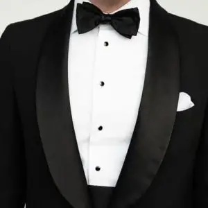

The lapels
I did say details mattered!
They're easy to forget, but lapels are important too: by tradition, notch or shawl (rounded) lapels are preferred.
As for the material, we recommend satin or a slightly more textured fabric that keeps a subtle sheen.
Note: for this kind of suit, avoid a vent in your jacket.
The trousers
Now for the trousers: they should be simple, but ideally they should also have a satin stripe as a matching detail, running along the outside seam.
(PS: in case you were wondering, avoid a flashy belt with your trousers; I'd advise sticking to something understated and elegant.)
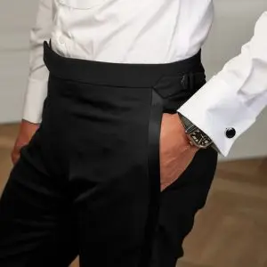

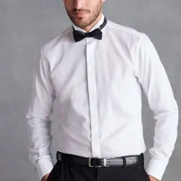

The shirt
For the shirt, you have several options.
The most classic: choose a white shirt with a fly front; that way there's no risk of a fashion faux pas.
Distinctive and traditional: choose a pleated-front shirt, an option perfectly suited to distinguished occasions such as weddings.
The shoes
For the black tie style, the perfect choice remains classic black patent shoes with leather laces in the same colour. But if you'd like a slightly more contemporary option, black velvet loafers will add texture and originality without compromising your elegance.
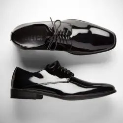
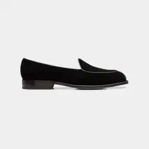


Accessories
How could we not mention the one and only… bow tie!
Once again, make sure it's in the same material as your lapels.
And for a finishing touch that will make you even more sophisticated, don't hesitate to bring out the cufflinks!
The "semi-formal" outfit
This is often the most requested outfit and the one that works everywhere! It is less formal than a tuxedo but still more polished than a casual style.
The suit
Suits and blazers are essential to a semi-formal outfit. I generally advise going for dark colours: navy blue, charcoal grey and black are the most suitable. Look for well-fitted, tailored suits in simple single- or double-breasted styles. If your suit ticks all these boxes, you can be sure of making no mistakes.

The shirt
For the shirt, no risks: once again, stick to the classics. Go for a simple, plain shirt in white, blue or grey as you like, but it still needs to go with the rest, so avoid overly bright colours. As for details, I'd recommend a cutaway or wing collar and rounded or French cuffs.
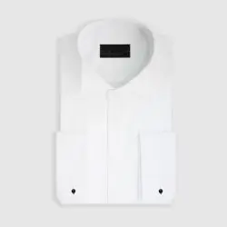
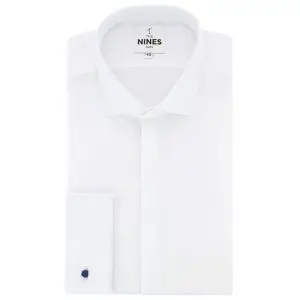
The shoes
For shoes, stick to a dressy, sophisticated style, though unlike the tuxedo look you have a little more freedom.
In fact, I'd advise avoiding patent shoes; that style is really reserved for the tuxedo.
The best options are therefore: Oxfords, a classic but safe choice. Monk straps are also a good fit and bring a more original, daring touch (personally, they're my favourites).
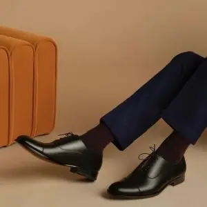

Accessories
Accessories can add a personal touch to your semi-formal outfit. A tie is a very good choice: classic, admittedly, but very effective. You can also add a pocket square for extra sophistication. Belts, braces and cufflinks can also complete your look.
Do be careful with colours, though: they should stay understated and classic.


The cocktail outfit
Now it's time for the cocktail style, often the most popular and requested today. This style is more relaxed but no less classy; it is simply less formal than the two we've seen above.
How to choose your cocktail outfit?
For a cocktail outfit, I'd advise choosing according to the season, the time of year and the style of the invitation.
For example, if the wedding takes place in winter, I'd recommend a suit in heavier, warmer materials such as wool or velvet. Whereas if the wedding is in summer, lighter materials are more appropriate: wool blends, linen and cotton are pleasant and, above all, very handsome to wear at a spring or summer wedding.
Colours also matter in the cocktail style: if the wedding takes place in autumn or winter, or in the evening, the most suitable colours are dark ones such as navy blue, forest green, grey or brown. For a spring or summer daytime wedding, pastel, nude and light colours are the way to go. Lately, beige, cream and pastel blue are often seen.
The invitations can also guide you on colours: they usually match the wedding's theme. But if you're still unsure, you can always ask the wedding planner in charge of the wedding; she'll know exactly how to guide you. My agency, Lovely Day Event, can also take care of the wedding decor, so I'm ideally placed to help with your questions.
The suit
Even though this outfit leaves more freedom, the style of suit to favour is one with a slim cut. As mentioned above, colours are also freer, so you can make bolder choices, including patterns if you feel like it (without going overboard) or stronger colours such as ochre.

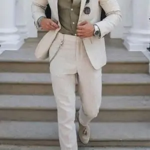


The shirt
For the shirt, you're also much freer: you can go for patterns and more adventurous colours than white or black, but if you choose a pattern, the suit should be plain. And vice versa: if your suit is patterned, avoid a patterned shirt at all costs; it would be too much going on in your outfit.
The shoes
For your shoes, Oxfords and monk straps work well, but loafers and sneakers can also be interesting options, as long as they remain smart, of course.


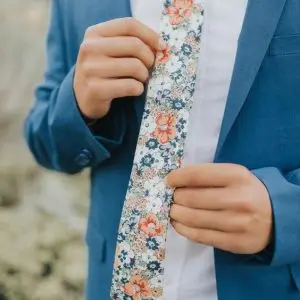

Accessories
Accessories are also freer and more relaxed. A tie is an option, but compared with the semi-formal style you can play with colours and patterns. For a look that is very much in vogue right now, don't hesitate to choose a pocket square: it lets you skip the tie and suits the cocktail outfit perfectly.
The invitation's graphic style
The graphic style of the invitation will tell you what the couple are hoping for.
Here are a few examples:
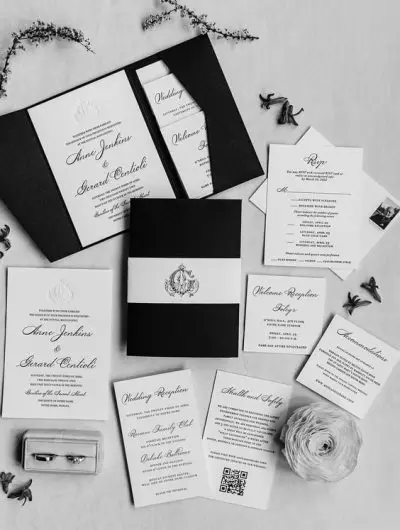
This style of invitation suggests a "black tie" dress code in black and white tones.

More pared-back invitations leave more freedom but give no clear indication; a semi-formal look will make sure you don't get it wrong. They do, however, clearly point you towards the expected colours.

Given the colours, the invitation style and the lettering, the appropriate outfit here would be a cocktail one.
The venue
The venue can also give you clues: if the wedding is at a château, a more formal style will probably be expected, whereas if it takes place in an old farmhouse, a more relaxed outfit may be more suitable. So don't hesitate to ask the couple or the wedding planner, and let yourself be guided by the style of the wedding!
In conclusion...
You now hold all the cards to find your perfect outfit for a wedding. And, not least, don't forget to bring a change of clothes, because weddings, however beautiful and classy, are often colourful events with plenty to drink!